More fieldwork
Explore my trail user impact StoryMap.
An analysis of JMT impact using JMT Wild restoration-monitoring data.
Open StoryMap ↗Collecting meadow, trail, and campsite data to establish useful baselines for stewardship and future restoration work along the John Muir Trail.
With JMT Wilderness Conservancy, I worked across the Eastern Sierra to collect ecological and restoration-monitoring data in alpine and subalpine landscapes. The work supported baseline assessments of meadow condition, trail and campsite impacts, channel features, and vegetation change.
Field data were collected with ArcGIS Field Maps and Survey123, Trimble GNSS receivers, transects, quadrats, tape measures, and repeatable observation protocols. These records provide a spatially organized baseline that can inform future restoration crews and long-term stewardship decisions.
Field observations are uploaded into ArcGIS Online to create clear, spatially organized records of meadow condition, transects, trail features, and restoration concerns. These maps turn field notes into a practical baseline that can guide future crews and help track change over time.
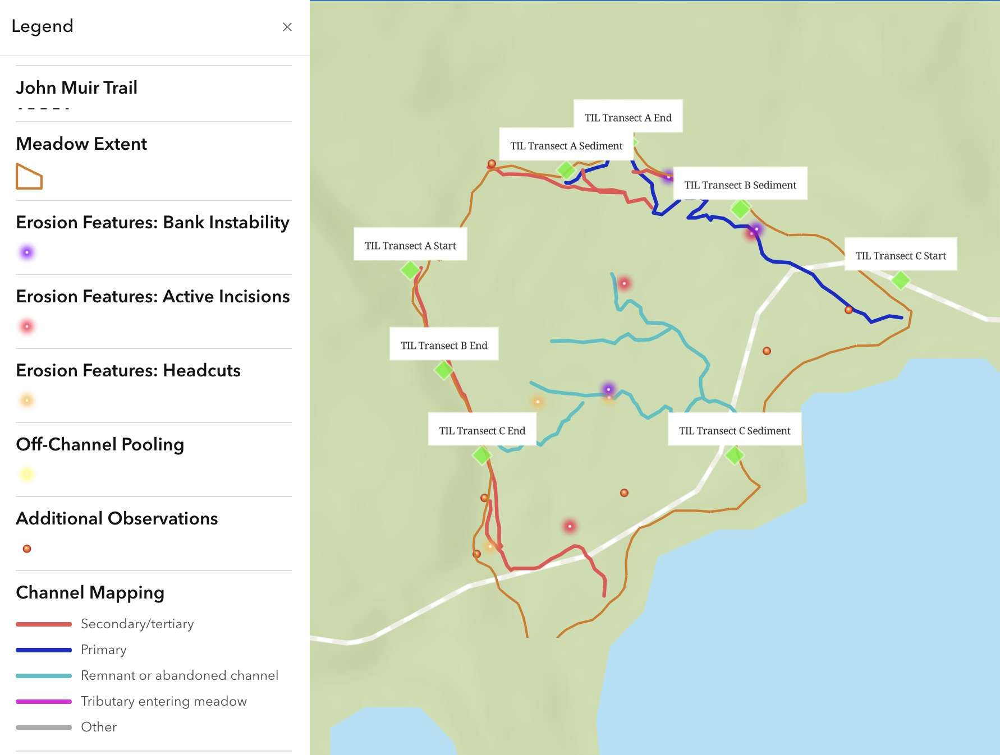
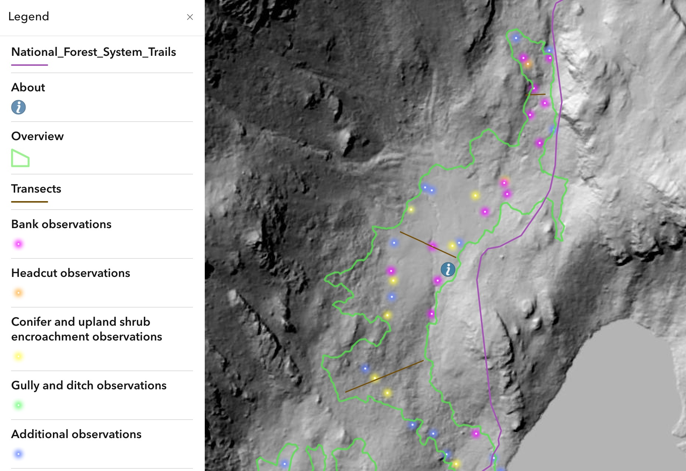
Monitoring data © JMT Wilderness Conservancy.
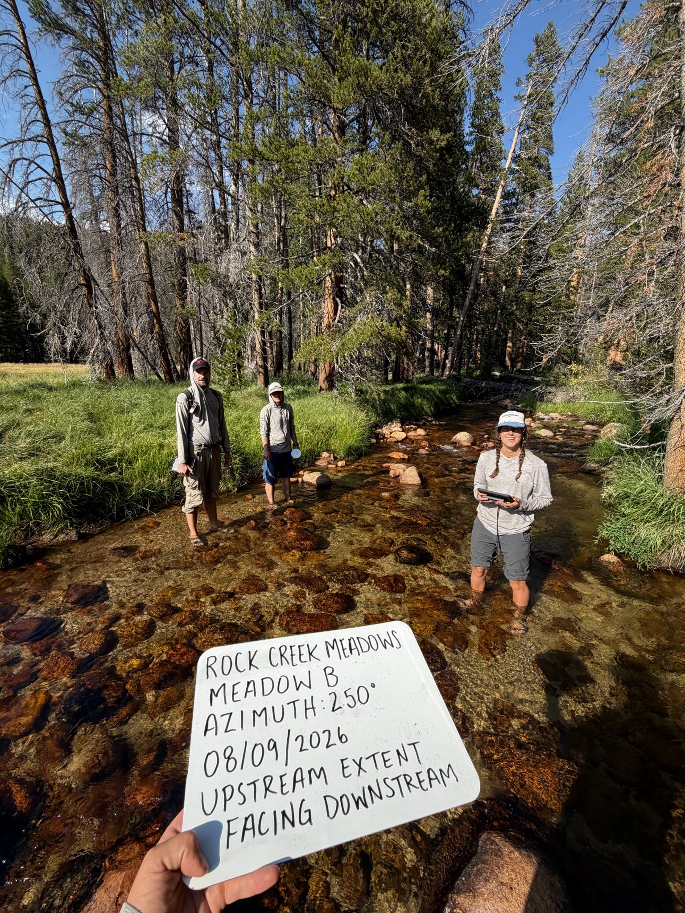 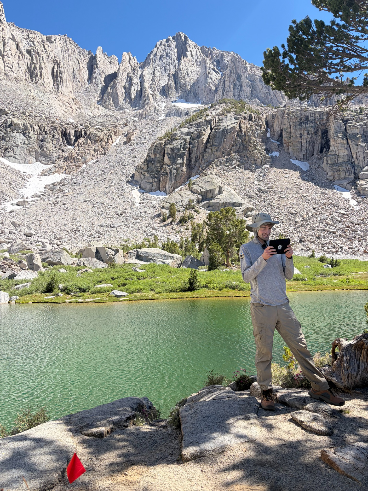 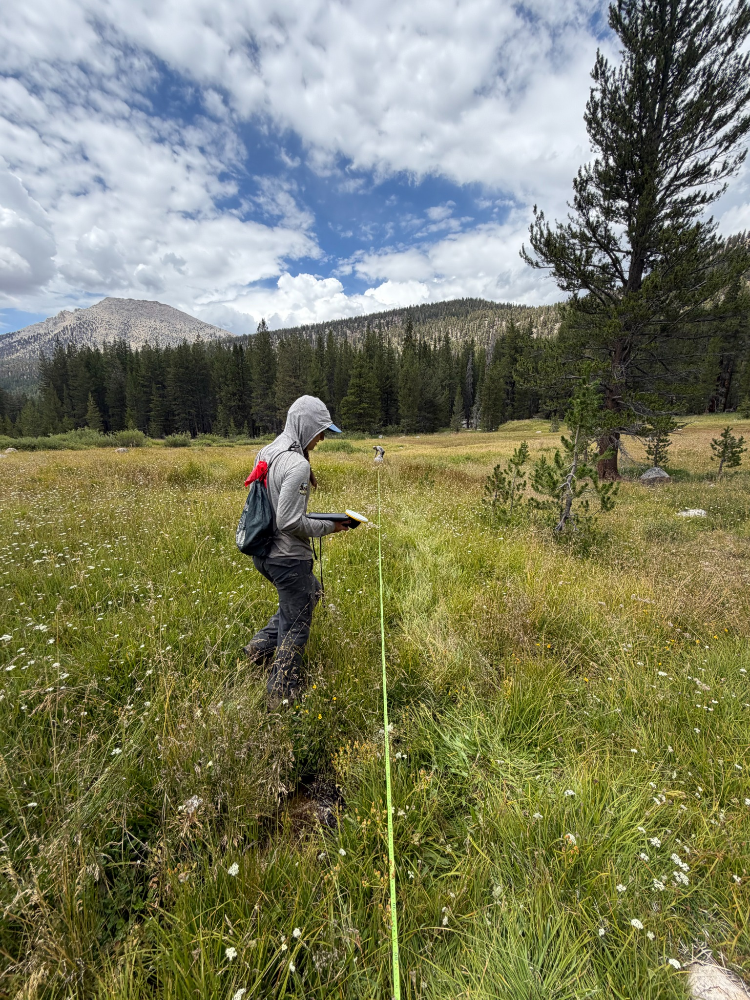 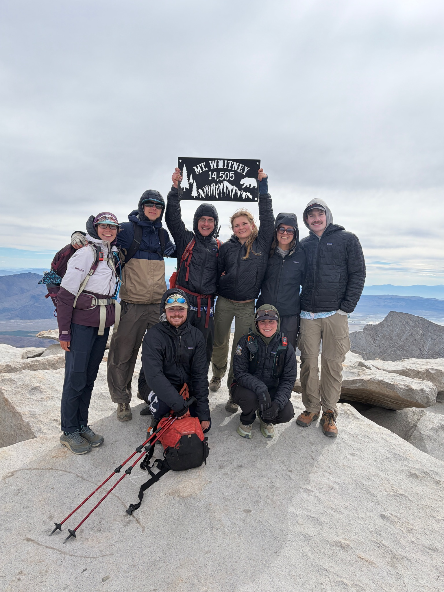 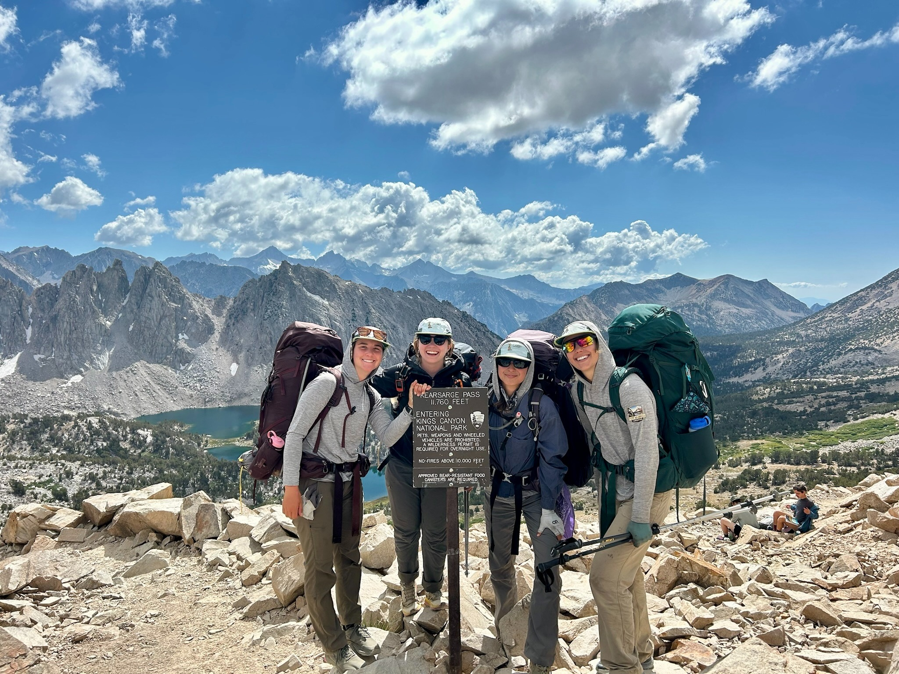 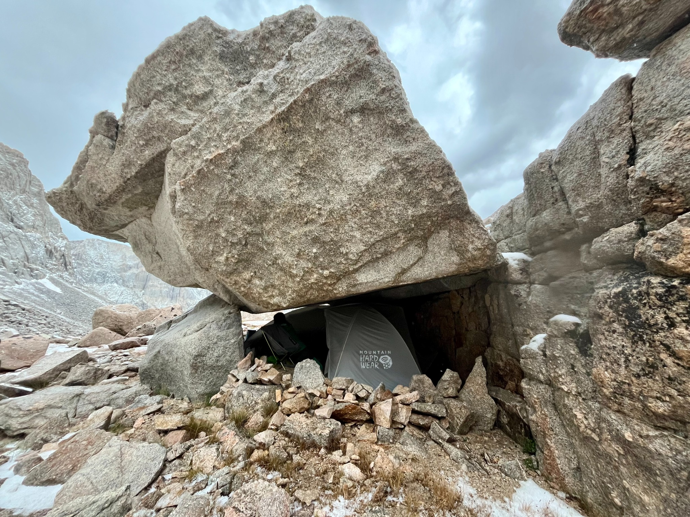 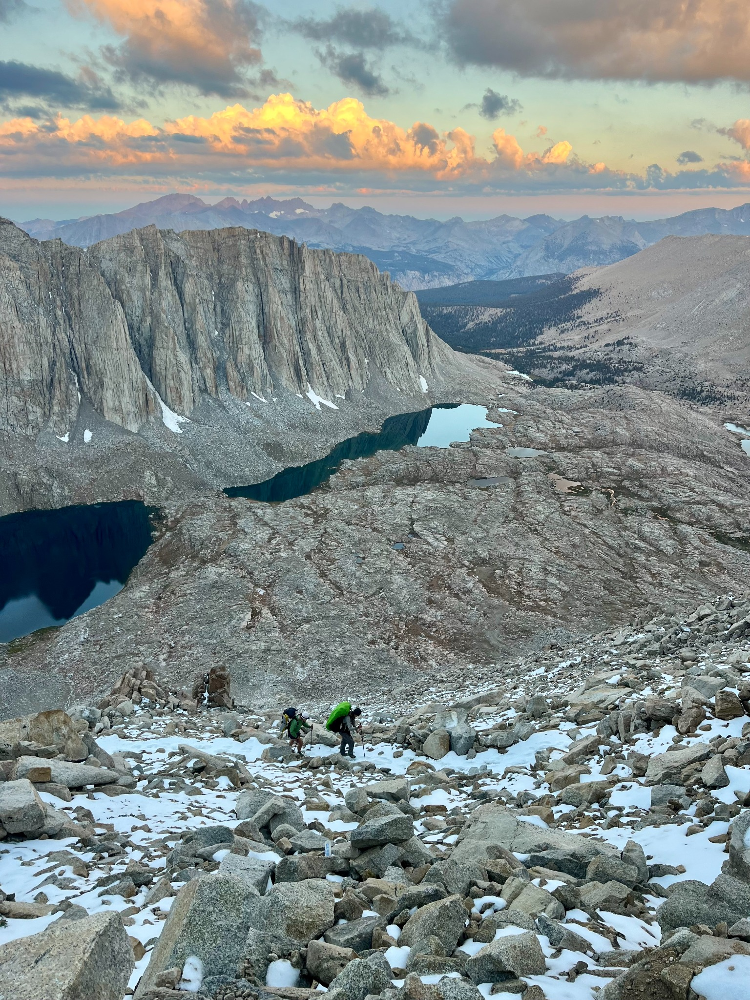 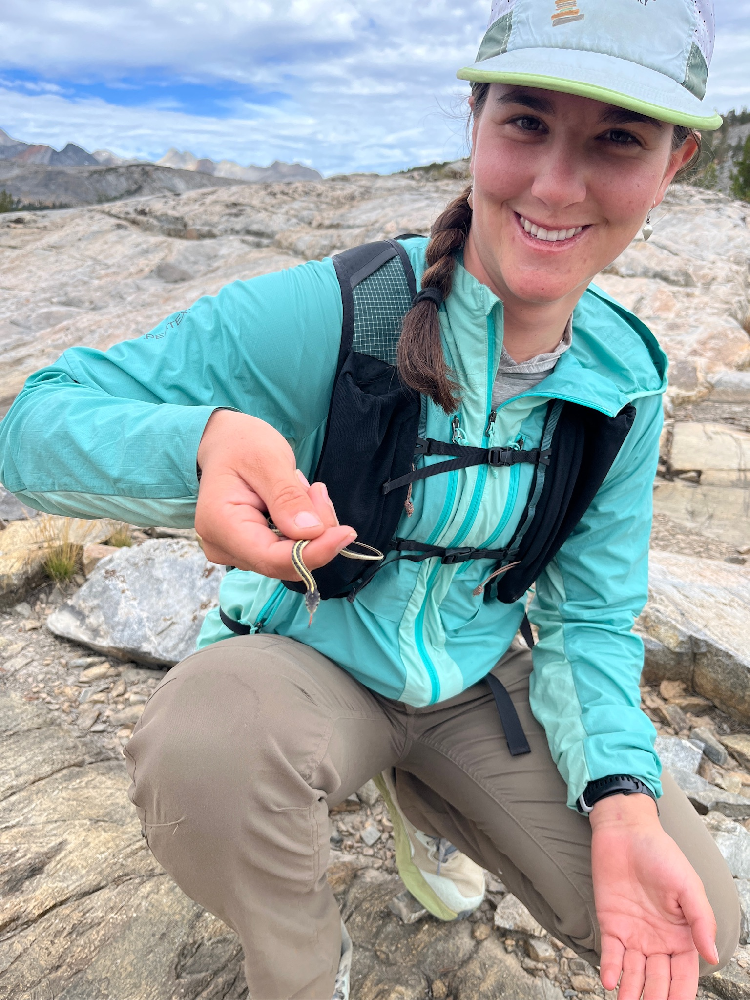 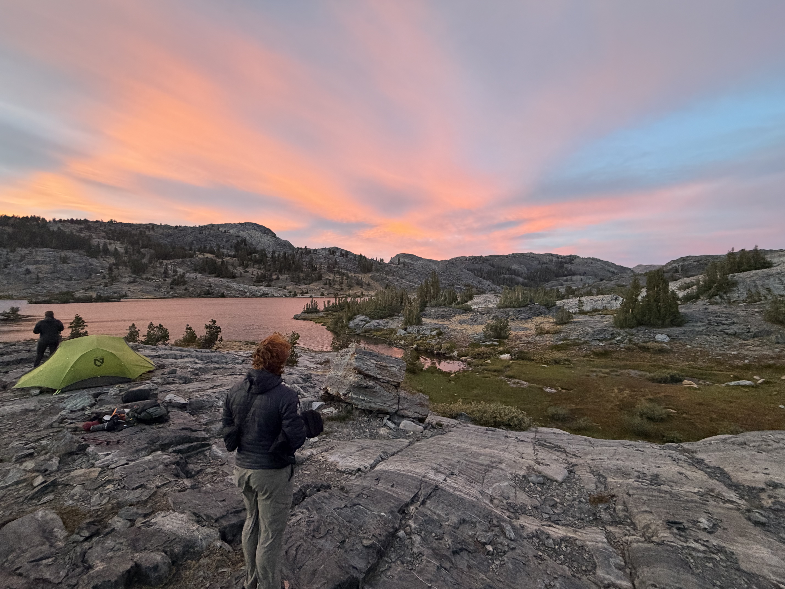 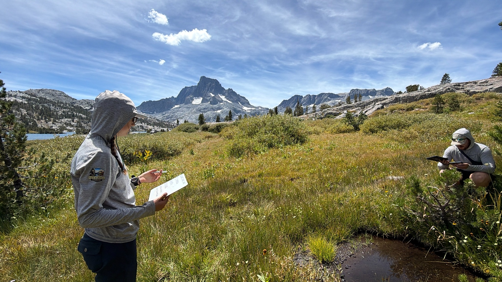
An analysis of JMT impact using JMT Wild restoration-monitoring data.
Open StoryMap ↗